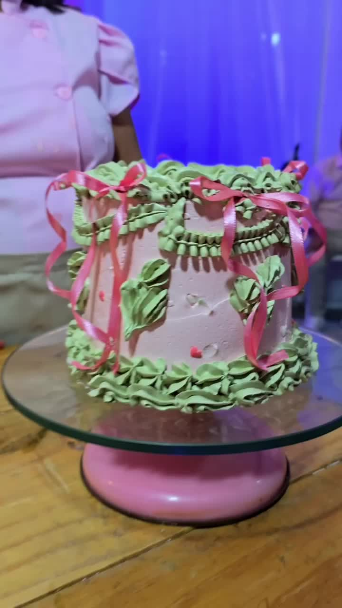

Origem
De onde vem? Quem produz? Qual é o território?
 5ª edição
5ª ediçãoO Ane Cakes Fair amplia a confeitaria para contar uma história de território, ingredientes, pessoas, tecnologia, criação, negócios e experiências.
De onde vem? Quem produz? Qual é o território?
Como a matéria-prima ganha valor? Quem transforma?
Chefs, confeiteiros, chocolatiers e empreendedores criam novas possibilidades.
Quem compra, vende, distribui, fornece e conecta?
O público vê, aprende, prova, participa e leva uma memória.
A experiência desperta o desejo de conhecer onde aquela história começa.
Fruto → produtor → processo → indústria → chocolate → confeitaria → experiência → território.
Em Ilhéus, o território não é apenas o endereço da feira: ele faz parte do conteúdo e da experiência.
Conhecer o território →